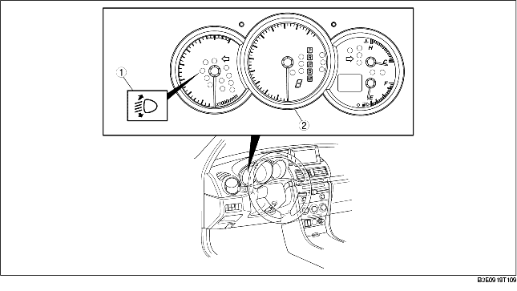

• In order to prevent blinding from oncoming traffic and to improve visibility, the auto leveling control module automatically controls the optical axis direction for optimal illumination based on signals input from the PJB and the auto leveling sensor.
• If an error signal from the auto leveling sensor or excessive power supply voltage is detected, the auto leveling warning light is illuminated to warn the driver of a malfunction.
• The fail-safe function operates when the auto leveling control module detects a malfunction. It also warns the driver of a malfunction by illuminating the indicator light as shown in the fail-safe function table.
• The fail-safe function controls each part as shown on the fail-safe function table.
